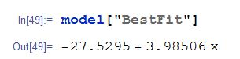

2.4.3 Lineærregresjon
For at arbeidet i Mathematica skal være enklere, spesielt som nybegynner anbefales det at
data importeres fra Excel.
Data kan importeres som vist på figur:
For å finne regresjonslinjen.
Brukes som vist på bildet LinearModelFit["Navnet på importen", x, x]. Dvs har du kalt importen
for c som på bildet bruker du variablen c her.

Modellen må så hentes ut, for å kunne beynttes senere. Dvs at skal du plotte eller bruke
regresjonslinjen til noe. Dette gjøres som beskrevet i bildet.
Figuren hvis bruke av "BestFit", og plot funksjonen.
Denne plotter punktene og regresjonslinjen. Legg merke til at verdiene for x vinduet er
endret.
Det er også mulig å få opp begge plottene samtidig.

For lineærregresjon med flere enn to varibler starter vi på sammme måte som med to.
Imporere data inn til en liste i Mathematica, og gir denne et variabel navn.
Ellers er mye likt.
Som der er mulig å se av figuren er fremgangsmåten svært lik, som for to variabel.
For å plotte dette:
og
Den første figuren viser regresjonsflaten, mens den siste viser punktene fra listen vår.
For å finne variancen, og for å finne standardaviket: